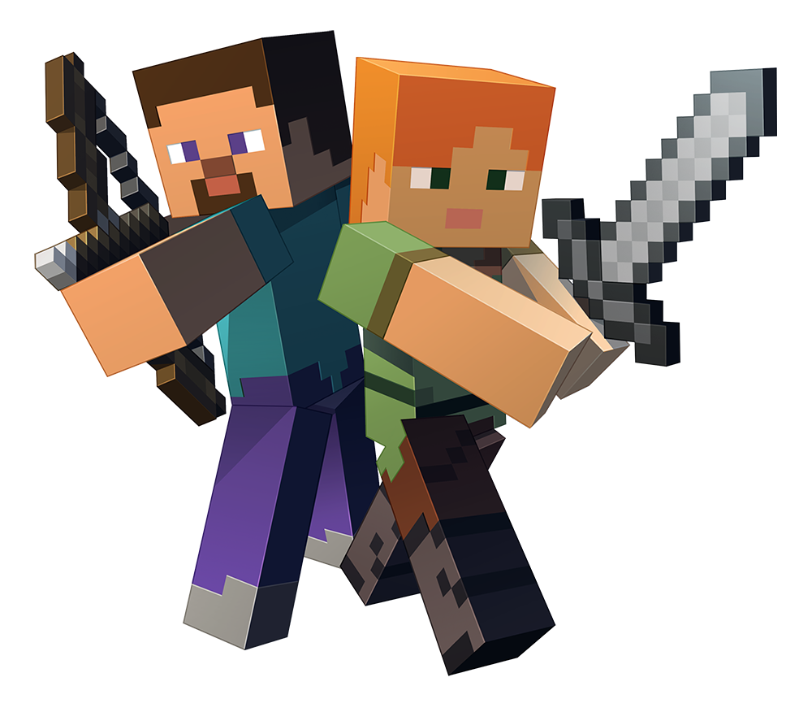

Welcome to the World of Minecraft
Minecraft is more than just a game—it's an adventure, a world of creativity, and a place where your imagination runs wild. The game offers an open-world sandbox experience where players can build, explore, and survive in a block-based world. Whether you enjoy constructing massive structures, mining for rare resources, or battling monsters, there is something for everyone. Players can choose from different game modes that cater to both casual builders and hardcore survivalists. With a vibrant and active community, Minecraft continues to grow and evolve with every new update. No matter your playstyle, Minecraft provides an experience that is both unique and limitless.
About Minecraft
Minecraft was created by Markus "Notch" Persson and released in 2011 by Mojang Studios. Over the years, it has become one of the best-selling games of all time, with a passionate community and endless gameplay possibilities.
Why Play?
Minecraft is one of the few games that allows complete freedom, giving players the ability to shape the world around them. Whether you want to build a medieval castle, a futuristic city, or an underground hideout, the only limit is your imagination. The game offers a variety of biomes, from lush jungles to frozen tundras, each with its own challenges and resources. Players can explore villages, trade with villagers, and uncover hidden dungeons filled with loot. The thrill of surviving the first night, crafting weapons, and battling powerful bosses keeps players engaged for hours. With constant updates and a passionate player base, Minecraft remains one of the most popular games worldwide.
Key Features:
- Creative Mode - Build freely with unlimited resources.
- Survival Mode - Gather materials, craft tools, and battle enemies.
- Multiplayer - Play with friends on servers or realms.
- Mods & Customization - Add new mechanics, textures, and gameplay features.
- Redstone Engineering - Create automated machines and contraptions.
Join the Minecraft Community!
Minecraft is not just a game but a global phenomenon with a passionate and creative community. Players can join multiplayer servers, compete in mini-games, and collaborate on massive building projects. YouTube and Twitch are filled with Minecraft content, from tutorials to epic gameplay challenges. The modding community has expanded the game with thousands of modifications that add new features, biomes, and mechanics. Whether you're a beginner or a veteran player, there is always something new to learn and explore. Join millions of players worldwide and start your Minecraft journey today!